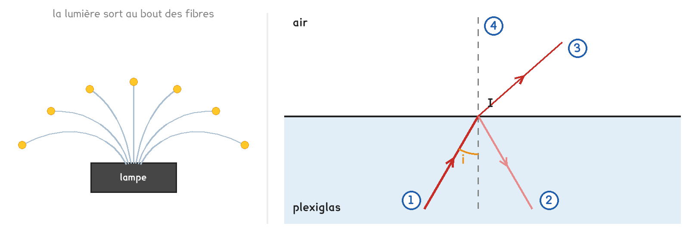
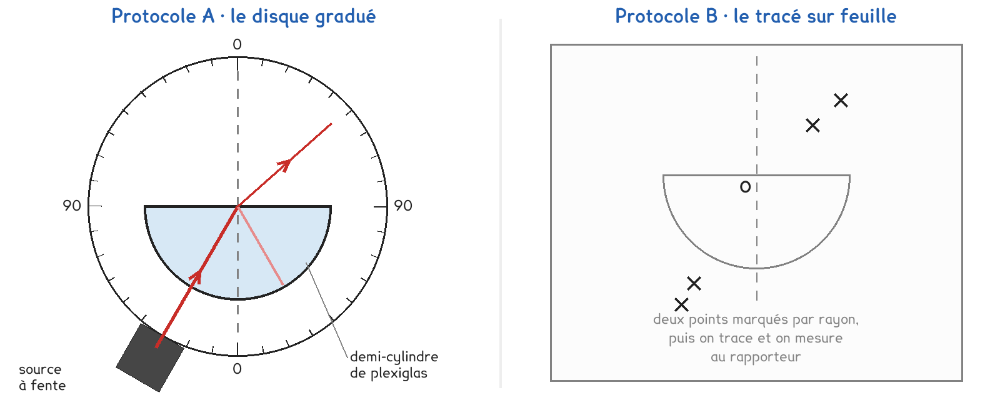
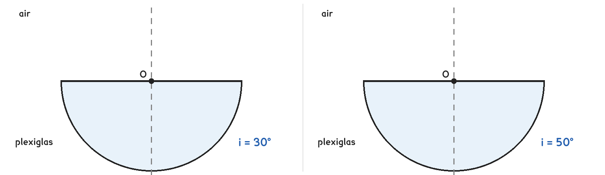

2de Bac Pro · toutes spécialités · TP commun 2DE-07
Pourquoi la lumière reste-t-elle dans la fibre, même quand celle-ci tourne ?
3 figures
Sujet. Une lampe décorative envoie sa lumière dans un bouquet de fibres de plastique. Les fibres se courbent, et pourtant la lumière n’en sort qu’au bout. La fibre de la box internet fonctionne de la même façon.
Problématique : pourquoi la lumière reste-t-elle dans la fibre, même quand celle-ci tourne ?
Au laboratoire, un demi-cylindre de plexiglas, le plastique des fibres de la lampe, permet de suivre un rayon de lumière.

a) Nommer les éléments numérotés sur la figure de droite.
Mots à placer : normale, rayon incident, rayon réfléchi, rayon réfracté.
| 1 | 2 | 3 | 4 |
|---|---|---|---|
| …………………………… | …………………………… | …………………………… | …………………………… |
Loi de la réflexion : l’angle de réflexion est égal à l’angle d’incidence i.
b) Sur la figure, i vaut 30°. Quel angle fait le rayon 2 avec la normale ?
L’angle du rayon 2 avec la normale vaut ……………… °.
c) La source du TP est un laser de classe 2, ou une lanterne à fente. Entourer les deux bons gestes.
garder le faisceau à plat sur la table · viser un camarade
regarder dans le faisceau · retirer montre et bague
Le pinceau de lumière entre par la face courbe en visant le centre O : il n’y est pas dévié. Il arrive ensuite sur la face plane, du plexiglas vers l’air, avec l’angle d’incidence i. Une partie de la classe prend A, l’autre B, et on compare à la fin.

Protocole A · le disque gradué. Le demi-cylindre est posé sur un disque gradué en degrés. On tourne le disque pour changer i, et on lit les angles sur les graduations.
Protocole B · le tracé sur feuille. Le demi-cylindre est posé sur une feuille. On marque deux points sur chaque rayon, puis on trace et on mesure au rapporteur.
d) Compléter le tableau pour comparer les deux protocoles : écrire dans les deux premières lignes, entourer dans la dernière.
| Protocole A | Protocole B | |
|---|---|---|
| Comment on règle l’angle i | …………………………… | …………………………… |
| Comment on mesure les angles | …………………………… | …………………………… |
| Il reste une trace du trajet | oui · non | oui · non |
Le choix se fait maintenant, avant de toucher au matériel.
e) Quel protocole prenez-vous ? Justifier en une phrase. Le professeur peut vous imposer celui qui reste disponible.
Je prends le protocole ……… parce que ……………………………………………………………………
f) Quand i augmente, le rayon réfracté s’écarte de plus en plus de la normale. Pour un angle i assez grand, faire une hypothèse, entourer :
le rayon sort toujours dans l’air · le rayon ne sort plus, toute la lumière est réfléchie
Avant de commencer
Laser de classe 2 : le faisceau reste à plat sur la table. On ne regarde jamais dans le faisceau, et on ne se penche pas au ras de la table.
Montre, bague et objet brillant restent hors du plan du faisceau. Dans la salle assombrie, on se déplace sans courir.
g) Relever les angles, puis l’angle limite.
S’il n’y a pas de rayon réfracté, écrire « aucun ».
| Angle d’incidence i (°) | 10 | 20 | 30 | 40 | 50 |
|---|---|---|---|---|---|
| Angle de réfraction r (°) | |||||
| Le rayon réfléchi est faible ou intense |
Angle limite mesuré : ……………… °.
h) Sur chaque demi-cylindre, tracer au rapporteur le rayon incident qui arrive en O, puis le trajet de la lumière que vous avez observé.

i) Pour i = 50°, que devient la lumière ? Comparer cet angle à votre angle limite.
j) Un groupe qui a pris l’autre protocole trouve-t-il le même angle limite ? Votre hypothèse de la question f est-elle confirmée ?
k) Dans la mallette de fibre optique, au bureau, la lumière suit la fibre même courbée. Sur sa paroi, l’angle d’incidence est-il plus grand que l’angle limite ?
l) Répondre à la problématique en deux phrases.
Ce que ce TP a établi, et qui vaut pour toute lumière qui sort d’un milieu transparent :
À RETENIR
Quand la lumière passe du plexiglas, ou de l’eau, dans l’air, le rayon réfracté s’écarte de la normale. Le rayon réfléchi fait avec la normale le même angle que le rayon incident.
Au-delà d’un angle d’incidence appelé angle limite, plus aucun rayon ne sort : toute la lumière est réfléchie, c’est la réflexion totale. Angle limite : environ 42° pour le plexiglas, 49° pour l’eau.
Dans une fibre, la lumière frappe la paroi avec un angle plus grand que l’angle limite : elle est réfléchie de paroi en paroi et reste piégée jusqu’au bout.
TP commun de physique-chimie, toutes spécialités. Le travail se fait sur la feuille du TP : cette page en est la version à l'écran, sans les lignes à remplir. Rien n'est enregistré.